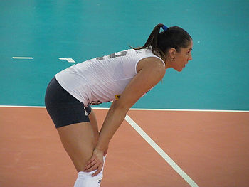
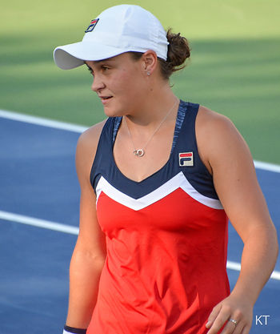
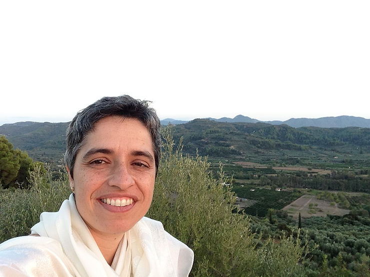

Nos últimos dias, duas declarações de afastamento de atletas, chamaram atenção: a da tenista australiana Ashleigh Barty, 25 anos, número 1 no ranking do WTA, informando que não irá mais disputar jogos profissionais; e a publicação do jogador da seleção brasileira de vôlei, Douglas Souza, 26 anos, nas redes sociais, de que vai deixar a seleção e ficar apenas em clube.
Além da idade, as declarações de ambos, publicadas na mídia, chamam a atenção para outros fatores:

“Eu não tenho mais a disposição física, emocional e tudo o que é necessário para você se desafiar no mais alto nível”, revelou Barty na despedida.
Douglas fez uma declaração mais detalhada*, dada a repercussão das fake news, mas o destaque para o stress foi o mesmo.
Para conversar mais sobre o tema, fomos buscar a experiência da Profa. Dra. Luciana Ferreira Angelo, psicóloga do esporte, atuando com a equipe feminina de futebol sub-20, ex-presidente da Abrapesp.

Abrapesp – O que você pode dizer sobre estas “aposentadorias”? São prematuras? Deveriam escolher priorizar-se ao invés de ceder às pressões de manter-se “onde todo mundo quer estar”? Como fica a coragem da decisão ?
LUCIANA – “Notícias sobre aposentadoria no esporte surpreendem, sejam elas originárias de atletas mais velhos ou mais novos. Com os mais novos e em momentos de ascensão na carreira, o público em geral não entende o que ocorre. Para os que vivem o dia a dia da vida de atleta, é compreensível que tenhamos atletas que se permitam viver fases da profissionalização esportiva gerenciando ciclos. As gerações mudam e os casos citados revelam a possibilidade de escolha, a qualidade de vida que pretendem ter.
“No caso da atleta australiana, a cultura do bem estar e a posição conquistada, foram fatores estimulantes e reforçadores da decisão. Importante é que a atleta já havia tido um episódio de “parada” em 2014 para descansar, pois as responsabilidades só aumentavam conforme a melhora de seus resultados. Nesse período, tornou-se jogadora de uma liga semi-profissional de críquete, provando que nasceu para a prática de esportes.Com lesões atuais, mais uma vez refez seu processo de avaliação e decidiu pela aposentadoria.
“Já o atleta brasileiro, aponta o tema da saúde mental como o determinante da sua decisão em deixar a seleção brasileira e continuar nos clubes. Para participar de uma seleção há um longa negociação e um tensão frequente para que os clubes cedam seus atletas por períodos definidos em competições de representação nacional. Assim, me parece coerente e adequado que o atleta tenha autonomia para escolher o que quer viver na carreira esportiva.”
Abrapesp – Luciana, qual o impacto da interpretação da mídia? A revista Veja tem uma coluna onde Ana Alice Gigliotti trata como desistência e o próprio Douglas foi às redes sociais esclarecer os fatos.
LUCIANA – “Não entendo como desistência, mas como competência pessoal e maturidade para escolher o que quer fazer da sua vida profissional. O que vale lembrar é que a atleta tem outras competências a serem desenvolvidas e, por muitas vezes, o que ocorre é que a rotina esportiva não oferece condições para que eles possam viver seus papéis sociais de forma a se sentirem satisfeitos e saudáveis. O trabalho esportivo apresenta estados afetivos intensos, processos cognitivos constantes e comportamentos sociais e emocionais que estão sujeitos a instabilidades situacionais expondo frequentemente os atletas como pessoas públicas. Muitas vezes conhecemos o personagem atleta, mas não a pessoa. E essa geração tem muito a nos ofertar quando assume o ser pessoa em primeiro lugar. “
Abrapesp – Como são as transições na e da carreira de um atleta?
LUCIANA – “Stambulova é uma das pesquisadoras precursoras dessa área e define as transições na carreira como aquelas em que os atletas vivem os ciclos de iniciação esportiva, amadorismo, profissionalismo e, por fim, a transição da carreira quando a aposentadoria ocorre. Ela pode se dar de forma voluntária (idade) ou involuntária (lesão, doenças, etc).”
Abrapesp – Quais os perigos dessa fase, caso o atleta não seja maduro e bem assistido?
LUCIANA – “Os perigos estão em tomar a decisão sem antes ter um planejamento de carreira que possa dar conta desde as questões financeiras até os planos para o futuro. A resistência em se pensar sobre o assunto ainda é grande e gera ansiedade em diversos atletas. A cultura brasileira não tem como prioridade a organização e o planejamento, por isso se faz necessário apoio e orientação para que ocorra de forma minimamente efetiva.”
Abrapesp – Como o psicólogo do esporte pode ajudar?
LUCIANA – “O psicólogo do esporte pode auxiliar no processo de construção do plano de carreira, promovendo ao atleta a oportunidade de pensar no assunto e organizar-se para as novas fases da vida.”
Quando finalizando a matéria, vimos mais duas publicações de afastamento:
Natália Pereira, ex-campeã da seleção, medalhista de ouro nas olimpíadas de Londres 2012, anunciou que não vai jogar com a camisa da seleção brasileira. A ponteira de 32 anos participou de 3 olimpíadas, mais de 20 torneios entre Mundiais e Sul-americanos.
A outra notícia, publicada em janeiro deste ano, e ainda atual, anuncia que William Muinhos, 28 anos, não tentará a vaga em Paris 2024. No pentatlo moderno desde 2009, representou o Brasil mais de 13 vezes nas principais competições mundiais. Motivo?
“Tenho uma lesão no tornozelo desde 2018. Venho fazendo tratamento e estou sempre afastado dos treinos de corrida e esgrima por conta disso. Sempre forçava a barra e acho que acabava piorando. Então isso foi me desgastando… Em 2020 perdi meu pai no início da pandemia e pensei em largar tudo. Mas me agarrei a ele para ter forças e superar tudo e conquistar pódios”, explicou William.
“Voltei a ser competitivo e conquistei pódios importantes. Meu ano 2021 foi ímpar! Competi bem e treinei melhor ainda. Mas virou o ano e não estava mais com aquela vontade de entrega. Alonguei as férias para ver se era isso mesmo e cheguei a conclusão que sim. Era o melhor a fazer”, completou.
“Acredito que o melhor legado é mostrar para quem está querendo iniciar no esporte que não necessariamente você precisa ter talento. Você precisa trabalhar duro! Não tenho talento em nenhum dos cinco [risos], mas foi trabalhando muito duro que eu conquistei muitas coisas no pentatlo”, concluiu.
TRECHO DA ENTREVISTA FERNANDA ZALCMAN – SITE OLIMPIADA TODO O DIA
*Resumo transcrito da declaração do Douglas Souza
Eu amo a seleção, considerando desde a base, são 10 anos. Iniciei em 2011. Estar ali sempre foi uma honra, um prestígio, um orgulho muito grande. eu sentia que precisava derrubar barreiras, e consegui fazer isso muito bem, mas chegou num ponto, em 2016, que a minha mente e meu corpo começaram a dar sinais de que eu precisava dar uma diminuída no ritmo. Porque, para quem não sabe, viver a seleção é: seleção-clube-seleção, sem férias e nem um tempo para nossa família, os nossos amigos, que são muito importantes para mim. Depois disso, só piorou. Cheguei a tratar de uma depressão… Em pleno 2022 tenho que dizer que, tratar de nós mesmos é extremamente importante. Temos que nos dar carinho e atenção… e, infelizmente estando na seleção, era muito difícil ter este tempo.
Em 2018 eu bati o martelo, junto com o meu empresário, e decidimos que o ideal era terminar o ciclo olímpico, indo a Tóquio e depois disso eu iria me aposentar. Pela minha saúde mental, eu decidi fechar o meu ciclo na seleção brasileira para ficar perto de mim, da minha família, dos meus amigos e seguirei jogando em clube. Estou negociando com clubes paulistas. E por mais que as fake news digam, que eu fui oferecido e não tiveram salários para pagar e etc, não é nada disso. Sei que os clubes de São Paulo não têm tantos recursos, e chegaram a dizer que ofereceram menos salário. Nada disso. A realidade é que a nossa Superliga já foi, anos atrás, uma das melhores do mundo. Hoje não é. Temos que nos contentar com o que está aqui no momento! Nosso esporte, o vôlei, infelizmente, está sofrendo muito com falta de investimento, de patrocinadores… e é normal que o nível da Superliga caia, que os salários dos jogadores caiam, e temos que colocar todos os dias nossa cara a tapa, nossa imagem para trazer patrocinadores e investidores. Nosso esporte merece. O esporte muda vidas. Mudou a minha, tira crianças da rua, enfim… mas as pessoas só sabem julgar, sem conhecer um terço da história. Enfim, estou feliz com a minha decisão. Vou ter tempo de trabalhar meus projetos, ficar com amigos, família e continuar me tratando. Estou super bem … e quando ficar sabendo para qual clube vou, aviso.